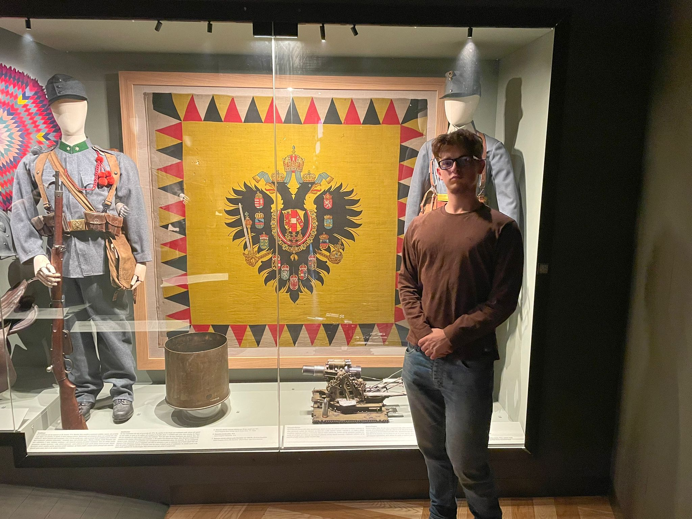

Bandiere in Primo Piano

Bandiera Italiana
Posseduta: Giugno 2012 - Provenienza: Roma
La mia prima bandiera, simbolo di orgoglio nazionale

Bandiera Senegal
Acquisita: Gennaio 2025 - Provenienza: Dakar
L'ultima aggiunta alla mia collezione

Bandiera Russa con Stemma
Acquisita: Febbraio 2025 - Provenienza: San Pietroburgo
Bandiera proveniente direttamente da una delle città più belle del mondo

Bandiera della serenissima
Acquisita: Luglio 2024 - Provenienza: Venezia
Bandiera stupenda per una città stupenda
La Mia Collezione
Preferita
Bandiera Italiana
Il tricolore italiano, simbolo di unità e libertà, con i suoi colori verde, bianco e rosso.
Materiale:
Poliestere
Dimensioni:
90x150cm
Stato:
Eccellente
Provenienza:
Roma, Italia
...
Categorie della Collezione
La Storia della Mia Collezione
2023
Inizio della Collezione
Acquisto della prima bandiera italiana durante un viaggio a Roma
2025
Prima bandiera africana
Bandiera del Senegal aggiunta alla collezione
Galleria Fotografica
